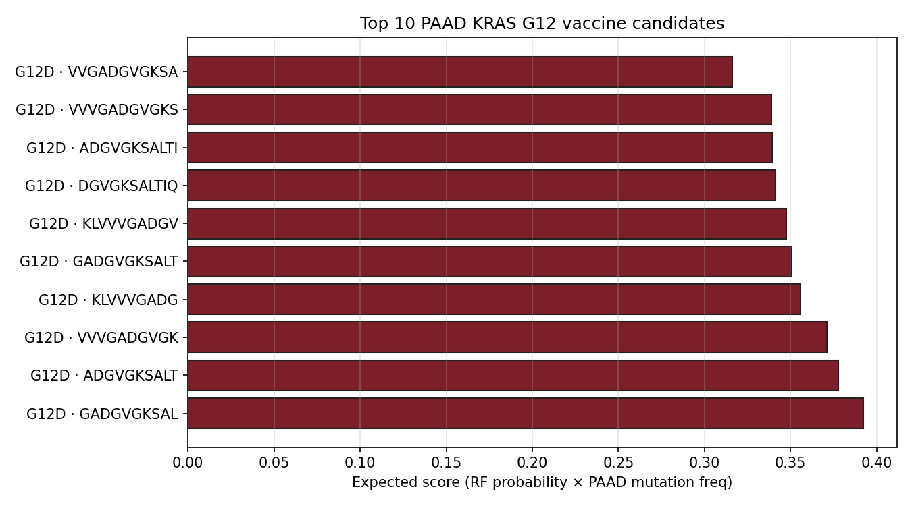
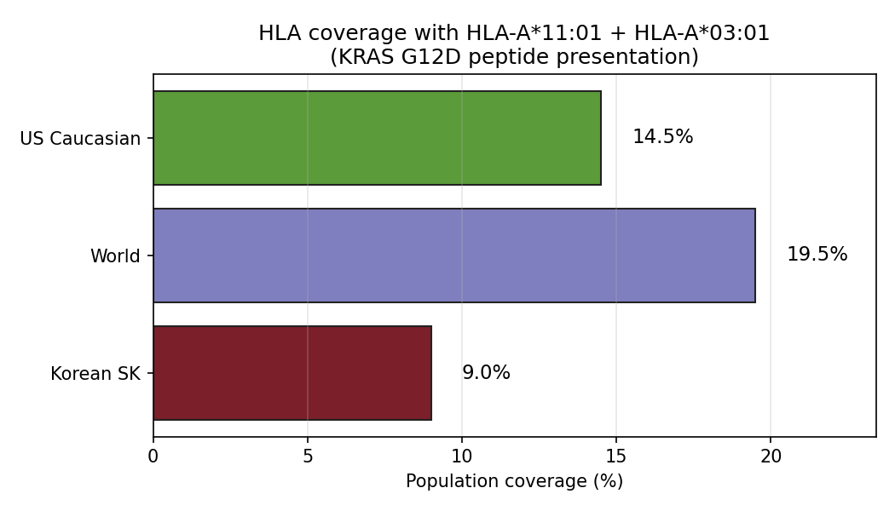

01TL;DR
Vaccine-first only when burden is low
Use the resected/MRD window. Best benchmark: autogene cevumeran + atezolizumab + mFOLFIRINOX. Best scalable public-antigen path: ELI-002 7P/2P for KRAS/NRAS-mutant MRD disease.
Backbone-first, vaccine-second
ATC/PDTC/RAI-refractory DTC needs BRAF/MEK, VEGF/MKI, RET/NTRK, or trial backbone first. Add vaccine only if HLA presentation and antigen quality survive audit.
Do not rank peptides alone
Gate by disease timing, clonality, expression, HLA typing, HLA LOH, B2M, immune context, ctDNA/biomarkers, and model uncertainty. If HLA presentation is broken, vaccine is a no-go.
02Evidence Anchors
| Disease | Regimen / test | Gate | Key result | Read |
|---|---|---|---|---|
| PAAD | Autogene cevumeran + atezolizumab + mFOLFIRINOX | Resected PDAC, enough class I/II neoantigens, post-operative low burden | 3.2-year follow-up: responders n=8 median RFS not reached vs 13.4 months in non-responders n=8; HR 0.14, P=0.007. | Best personalized PDAC vaccine anchor. |
| PAAD | ELI-002 2P/7P amphiphile mKRAS vaccine | MRD-positive KRAS/NRAS-mutant disease after locoregional therapy | Final phase 1 2P: mKRAS T-cell response above threshold associated with RFS not reached vs 3.02 months; HR 0.12, P=0.0002. | Best scalable public-neoantigen path. |
| PAAD | Pooled mKRAS long peptides + nivolumab + ipilimumab | Resected KRAS-mutant PDAC, fit for dual checkpoint | 11/12 average KRAS immune responders; 10/12 tumor-matched responders; 2/12 grade 3 immune-related AEs from checkpoint. | Immunogenic, but toxicity and DFS signal are still small-n. |
| THCA | Dabrafenib + trametinib | BRAF V600E locally advanced/metastatic ATC | FDA ATC approval: ORR 61% in 23 evaluable ATC patients; response at least 6 months in 64% of responders. | Backbone for BRAF-mutant ATC. |
| THCA | Dabrafenib + trametinib + pembrolizumab | BRAF V600E ATC, trial/experienced-center context | Retrospective signal: median OS 17.0 months with triplet vs 9.0 months with doublet. | Checkpoint-backbone clue, not vaccine proof. |
| THCA | Lenvatinib + pembrolizumab | Progressive radioiodine-refractory DTC; lenvatinib-naive or post-lenvatinib progression | Phase 2 RR-DTC: cohort 1 ORR 65.5%, median PFS 26.8 months; cohort 2 ORR 16%, median PFS 10.0 months. | Most useful DTC/PDTC immune-combo backbone. |
03Disease Logic






PAAD: public driver antigen + MRD window
PDAC is usually KRAS-driven and immunologically cold, but post-operative/MRD disease gives vaccine-induced T cells time to expand before bulky disease and stroma dominate. This is why the strongest data sit in resected or MRD-positive settings.
THCA: dark cancer, but not uniformly cold
Routine PTC has too little risk and too few neoantigens for vaccine-first logic. The viable thyroid entry points are ATC/PDTC/RAI-refractory disease, HT/TLS/IFN-active subgroups, BRAF/MAPK or VEGF/MKI backbones, and HLA-intact tumors.
04Better Combination Strategy
| Rank | Segment | Combination | Why it is better | Disposition |
|---|---|---|---|---|
| 1 | PAAD resected, personalized | Autogene cevumeran + atezolizumab + mFOLFIRINOX | Combines priming, checkpoint release, and standard adjuvant cytotoxic therapy in the same low-burden window where PDAC vaccine signal exists. | Lead personalized benchmark |
| 2 | PAAD MRD-positive KRAS-public | ELI-002 7P/2P, with checkpoint/chemo sequencing only in trials | Public driver antigen, lymph-node targeting, MRD selection, scalable manufacturing; cleaner for a Korean/world coverage plan than fully personalized vaccine alone. | Lead shared-antigen path |
| 3 | PAAD resected KRAS broad | mKRAS-VAX + nivolumab + ipilimumab | Broad KRAS coverage and checkpoint amplification; useful for TCR biology and public clonotype discovery. | Trial-only; toxicity-aware |
| 4 | THCA BRAF V600E ATC | Dabrafenib + trametinib +/- pembrolizumab; vaccine only as antigen-positive trial add-on | ATC needs fast MAPK cytoreduction. Checkpoint can be layered when immune signal or progression justifies it; vaccine alone is too slow. | Backbone-first |
| 5 | THCA RAI-refractory DTC/PDTC | Lenvatinib + pembrolizumab +/- vaccine if HLA/neoantigen positive | VEGF/MKI can improve immune access and disease control; PD-1 provides release. Vaccine is a precision add-on, not the base regimen. | Best DTC/PDTC combo backbone |
| 6 | THCA HT/TLS immune-active high-risk recurrence | Neoantigen or selected TAA vaccine + PD-1 in trial setting | HT/TLS/IFN/HLA-II biology supplies a plausible pre-primed immune context in an otherwise dark tumor type. | Hypothesis; needs trial |
05Neoantigen Patient Triage
GO: high-confidence neoantigen patient
PAAD resected/MRD-positive, KRAS public antigen or enough private neoantigens, HLA intact, B2M intact, RNA-expressed target, ctDNA/CA19-9 monitorable, ECOG 0-1.
THCA high-risk progressive ATC/PDTC/RAI-refractory DTC, actionable backbone, immune-active HLA-II/IFN/TLS or ATC/RAI-dediff axis, HLA intact, antigen expressed.
NO-GO: vaccine likely wastes time
Low-risk cured PTC, bulky rapidly progressive disease without cytoreductive backbone, HLA LOH/B2M loss, HLA-low tumor, no expressed target, severe immunosuppression, active uncontrolled autoimmune disease, or model high-OOD uncertainty.
Scoring scaffold
| Score band | Read | Action |
|---|---|---|
| 80-100 | Neoantigen route is biologically and operationally coherent. | GO for vaccine/trial or personalized design. |
| 60-79 | Potentially usable, but one major uncertainty remains. | COMBO-GO only with strong backbone and pharmacodynamic monitoring. |
| <60 | Vaccine mechanism likely underpowered or untestable. | ABSTAIN; use targeted therapy, standard systemic therapy, RAI/redifferentiation, or non-vaccine trial. |
06Workup Bundle
07Decision Matrix
| Archetype | Best next strategy | Must verify | Disposition |
|---|---|---|---|
| Resected PDAC, manufacturable private neoantigens | Personalized mRNA neoantigen vaccine + PD-L1 + mFOLFIRINOX style trial | HLA intact, sufficient class I/II targets, tissue/RNA QC, timing | GO |
| MRD-positive KRAS G12D/R/V/etc. PDAC | ELI-002 7P or related mKRAS vaccine trial | KRAS/NRAS variant, ctDNA/CA19-9, no radiographic bulky disease | GO |
| Metastatic bulky PAAD, G12D, no MRD window | Systemic therapy or KRAS/RAS inhibitor trial first; vaccine after cytoreduction only if low burden achieved | Performance status, trial access, TME burden | TRIAL-FIRST |
| BRAF V600E ATC | Dabrafenib + trametinib; consider pembrolizumab/trial add-on; vaccine only if stable enough | BRAF, HLA/B2M, disease tempo, irAE risk | BACKBONE-FIRST |
| BRAF-wildtype ATC | TKI/VEGF/MAPK-axis + PD-1 trial such as XL092/cemiplimab direction | RET/NTRK/RAS/NF1, HLA status, surgical window | TRIAL-FIRST |
| Progressive RAI-refractory DTC/PDTC | Lenvatinib + pembrolizumab backbone; add vaccine only if antigen-positive and HLA-intact | RAI refractory progression, target expression, toxicity budget | COMBO-GO |
| HT/TLS high-risk recurrent PTC | Trial vaccine/PD-1 concept after autoimmune safety review | HT/TLS/IFN/HLA-II signal, HLA class I, active autoimmunity | HYPOTHESIS |
| Low-risk conventional PTC | Standard thyroid cancer care; no vaccine | Risk category and recurrence status | NO-GO |
| Any tumor with HLA LOH/B2M loss/HLA-low | Do not prioritize T-cell vaccine; use non-vaccine therapy/trial | Repeat/orthogonal presentation assay if clinically important | NO-GO |
08Honest Caveats
PAAD caveat
The strongest PDAC vaccine results are early-phase and biased toward the post-operative/MRD window. They do not justify vaccine monotherapy for bulky metastatic PDAC.
THCA caveat
Thyroid cancer has very low TMB. For THCA, the translational claim should be patient selection and combination logic, not a broad neoantigen-vaccine efficacy claim.
Prediction caveat
Public neoantigen models remain leakage-sensitive. The current local benchmark shows that better uncertainty can be more reliable than better ranking on truly external peptides.
Safety caveat
HT/TLS enrichment can make THCA more immune-active, but it also raises checkpoint-autoimmunity risk. The biology and safety direction point in opposite directions.
09Sources and Paths
| Artifact | Path / source |
|---|---|
| Evidence matrix | project/results/p_cancer_vaccine_strategy_2026_05_09/evidence_matrix.tsv |
| Patient triage matrix | project/results/p_cancer_vaccine_strategy_2026_05_09/patient_triage_matrix.tsv |
| Combination priority matrix | project/results/p_cancer_vaccine_strategy_2026_05_09/combination_priority_matrix.tsv |
| Summary | project/results/p_cancer_vaccine_strategy_2026_05_09/SUMMARY.md |
| PDAC mRNA vaccine long follow-up | Nature 2024 autogene cevumeran follow-up |
| ELI-002 final phase 1 | Nature Medicine 2025 AMPLIFY-201 final |
| mKRAS-VAX dual checkpoint | Nature Communications 2026 phase 1 |
| Autogene cevumeran randomized phase 2 | ClinicalTrials.gov NCT05968326 |
| ELI-002 7P phase 1/2 | ClinicalTrials.gov NCT05726864 |
| ATC BRAF/MEK approval | FDA dabrafenib/trametinib ATC approval |
| RR-DTC lenvatinib + pembrolizumab | Clinical Cancer Research 2024 phase 2 |
| BRAF-wildtype ATC TKI + PD-1 trial | NCI NEO-COMBAT XL listing |
| Local vaccine full dossier | cancer_vaccine_full_dossier.html |
| Local PAAD page | paad_deep_dive.html |
| Local THCA page | thca_deep_dive.html |
| Local method blueprint | project/results/p_neo_bayesian_2026_05_09/NEOANTIGEN_METHOD_BLUEPRINT_2026_05_09.md |